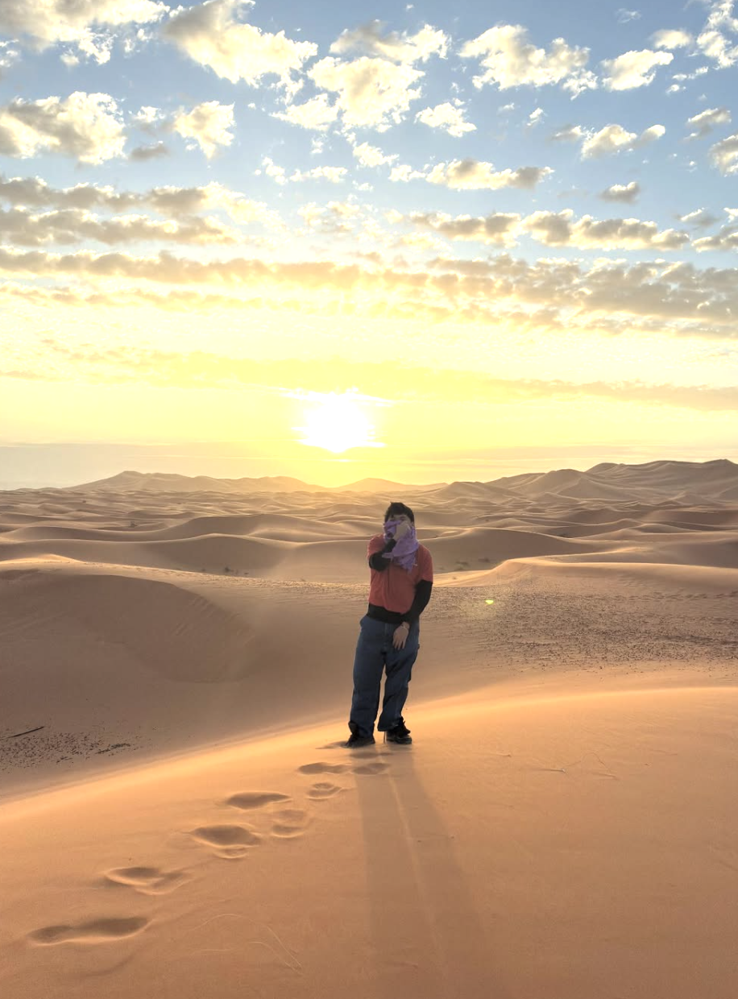
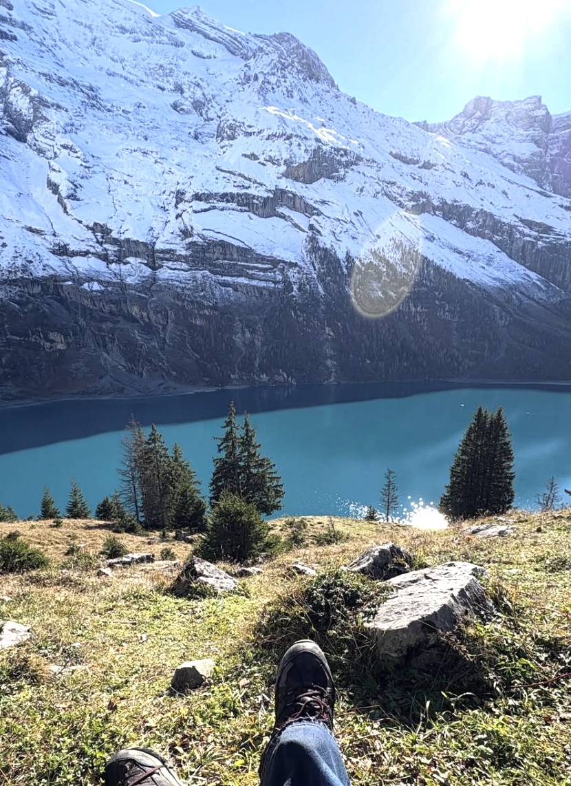

I want to travel everywhere, I love people, I love food, I love cities, I love nature

Morocco
Somewhere like central east of Morocco, Oct 2025
I went on a camel in the Sahara
and it was like 2 days of driving to reach here from marrakesh. We stayed in a tent and it was so crazy, the stars were unbelievable so I heard, my friends didn't wake me up and stayed up looking at the stars without me; genuinely I should've choked them out for that.

Switzerland
Oeschinensee | Oct 2025
First international solo travel, I went to switzerland and it was so amazing, I learned so much. I still want to go back during the summer because It was cloudy and rainy when I went which is a completely different vibe than what most people expect of switzerland. I met some interesting people and argued with an Israeli